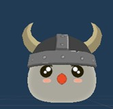
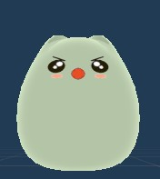

Ici, vous pouvez en savoir plus sur les différentes unités de 3D Legacy.
Unités
Paysan - Arborant un fier casque viking, ce slim n'est en réalité qu'un collecteur de ressources pour sa tribu. Ils sont présents dès le début de partie.
 Paysan
FatSlime - Plus grand et plus fort que ses congénères, le FatSlime encourage les collecteurs. Il permet d'accroître la capacité de leurs inventaires de 1. Nécessite de l'or, du fer et du bois.
 FatSlime
10 Or
10 Fer
10 Bois
KingSlime - Il est le roi des slimes. Lorsqu'il est recruté, il augmente de 10 la quantité restante pour chaque ressources non-épuisées. Ainsi, la faction pourra connaître l'abondance.
 10 Or
10 Or
 10 Fer
10 Fer
 10 Bois
10 Bois